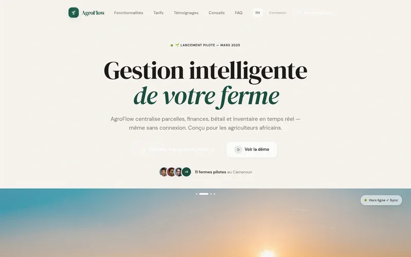
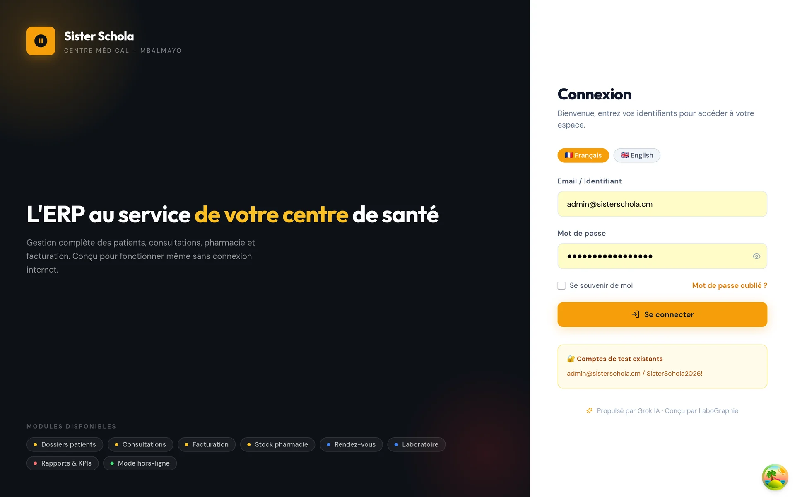

Solutions d'Ingénierie & Services Spécialisés
De l'architecture logicielle critique à la création graphique percutante, découvrez l'ensemble de mes domaines d'intervention.

AgroFlow ERP · Architecture WebGénie Logiciel & Applications Web
Conception et développement sur-mesure d'architectures SaaS, plateformes ERP modulaires et applications web complètes, pensées pour la résilience et le mode hors-ligne.
- Architectures SaaS & ERP modulaires
- Modélisation relationnelle SQL stricte (MERISE 3NF)
- APIs RESTful performantes et sécurisées
- Synchronisation hors-ligne Local-First (IndexedDB)
 Candace Distribution · Packaging 3D
Candace Distribution · Packaging 3D
Infographie, Packaging 3D & Branding
Création d'identités visuelles complètes, logos vectoriels scalables, modélisation volumique de packaging 3D pour flacons/bouteilles et supports de communication à fort impact.
- Modélisation 3D de flacons, bouteilles & boîtiers (Candace, LaboGraphie)
- Identités visuelles et chartes graphiques complètes (Shawel, Fosa'a, GTA)
- Affiches événementielles et flyers commerciaux (Petit Colis, GMC)
- Signalétique grand format, stands d'exposition et roll-ups 3D

Sister Schola ERP · Gestion CliniqueBases de Données & Systèmes Médicaux
Conception de systèmes d'information hospitaliers et de santé, modélisation relationnelle garantissant l'intégrité transactionnelle, le secret médical et la centralisation des dossiers patients.
- Gestion des admissions et dossiers patients informatisés
- Traçabilité des actes cliniques et audits de consultations
- Modélisation relationnelle haute cohérence (PostgreSQL / MySQL)
- Contrôle des accès basé sur les rôles (RBAC)
 Illustration contextuelle · Baie de brassage
Illustration contextuelle · Baie de brassage
Réseaux & Sécurité Applicative
Mise en œuvre d'infrastructures locales d'entreprise fiables, câblage structuré d'armoires et baies de brassage, segmentation VLAN et sécurisation des accès réseau.
- Câblage structuré, repérage et brassage d'armoires
- Configuration de switchs administrables et routeurs
- Segmentation VLAN et filtrage des accès par pare-feu
- Audit de vulnérabilités réseau et plans de reprise d'activité
Maintenance Informatique & Support
Diagnostic approfondi de parcs informatiques, maintenance préventive et curative des postes de travail, déploiement sécurisé de systèmes d'exploitation et assistance réactive.
- Diagnostic matériel, remplacement de composants et nettoyage
- Installation, durcissement et optimisation de systèmes d'exploitation
- Mise en place de protocoles de sauvegarde locale et cloud
- Assistance technique sur site et téléassistance réactive
Conseil IT & Productivité Numérique
Accompagnement des professionnels et PME dans le choix de leurs outils numériques, l'automatisation de tâches chronophages et l'adoption pragmatique des outils d'IA pour décupler leur productivité.
- Audit des processus de travail et identification des tâches répétitives
- Conseil sur l'adoption raisonnée des modèles génératifs et assistants IA
- Mise en place de scripts et flux automatisés de traitement documentaire
- Formation pratique des équipes pour une appropriation rapide et autonome
Comment se déroule notre collaboration ?
De la première prise de contact jusqu'au déploiement et au support continu.
Cadrage & Écoute
Analyse fine de votre besoin, définition du cahier des charges et compréhension de vos contraintes techniques ou artistiques.
Devis & Conception
Élaboration d'une proposition claire avec délais maîtrisés, maquettes visuelles ou schémas d'architecture logicielle.
Développement & Tests
Implémentation rigoureuse selon les meilleures pratiques du marché, tests fonctionnels et itérations collaboratives.
Livraison & Support
Mise en production sécurisée, remise des sources vectorielles ou du code testé, et accompagnement technique dans la durée.
Formules d'intervention adaptées
Des formules flexibles calibrées pour les PME, startups, cabinets médicaux et créateurs de projets.
Mission Ponctuelle
Idéal pour un livrable précis : flyer, logo, audit réseau ou composant logiciel isolé.
- Cahier des charges cadré
- Livrables clés en main sous 2 à 7 jours
- Révisions incluses
- Fichiers sources fournis (Code ou Vecteurs)
Projet Clé en Main
Idéal pour la création complète d'un ERP, SaaS, identité de marque 360° ou infrastructure réseau.
- Accompagnement de A à Z (Architecture + Dev + Tests)
- Déploiement en production (Vercel, Docker, Serveur)
- Mode hors-ligne résilient et base de données SQL
- Garantie et support technique étendu 30 jours
Régie & Maintenance
Idéal pour les entreprises souhaitant un suivi technique ou infographique mensuel réactif.
- Support technique prioritaire (24/48h)
- Maintenance préventive de vos applications et parcs
- Production graphique régulière (campagnes, affiches)
- Optimisations continues de performance